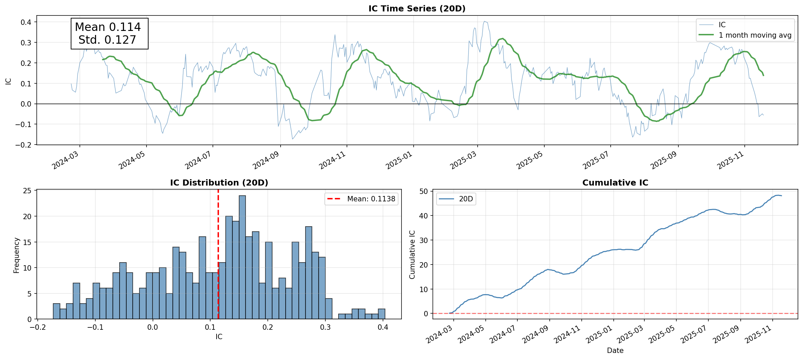
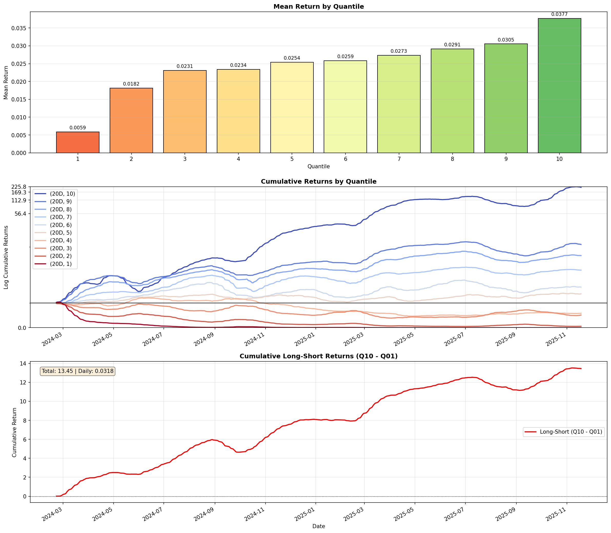
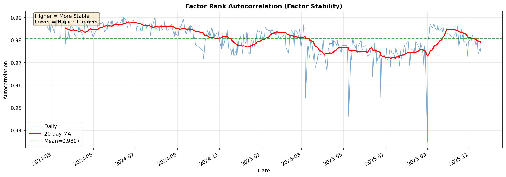

Alphalens 因子分析报告 (平滑)
生成时间: 2026-03-26 13:34:46
关键指标
0.1138
Rank IC (Spearman)
结论
- Rank IC = 0.1138: 因子预测能力优秀
- IR = 0.8965: 因子稳定性优秀
- Long-Short = 0.0318: 分层效果优秀
Rank IC 分析

说明：Rank IC 是 Spearman 相关系数，衡量预测分数排名与未来收益排名的相关性。IC > 0.05 为优秀，IR > 0.5 为稳定。
收益分析

各分位数收益详情
| Quantile | Mean Return | vs Q1 Spread |
|---|
| Q1 | 0.0059 | 0.0000 |
| Q2 | 0.0182 | 0.0123 |
| Q3 | 0.0231 | 0.0173 |
| Q4 | 0.0234 | 0.0175 |
| Q5 | 0.0254 | 0.0196 |
| Q6 | 0.0259 | 0.0200 |
| Q7 | 0.0273 | 0.0215 |
| Q8 | 0.0291 | 0.0233 |
| Q9 | 0.0305 | 0.0247 |
| Q10 | 0.0377 | 0.0318 |
换手率/稳定性分析

说明：Factor Rank Autocorrelation（因子秩自相关）衡量相邻两期因子排名的相关性。
- 值越高（接近1）：因子越稳定，换手率越低
- 值越低（接近0）：因子变化大，换手率越高
- 本因子稳定性: 0.9807 (高)
Generated by Alphalens | Data: 2026-03-26